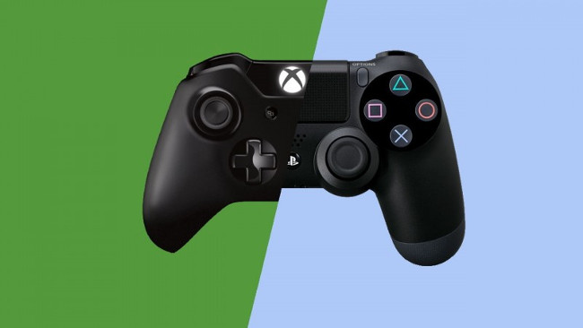

## -*- coding: utf-8 -*-

<%include file="cabecera.html"/>
<%include file="menu.html"/>

	<section id="cuerpo">
		<h1> Noticias tecnología: </h1>
		<h2> PlayStation 4 vs Xbox One, ¿qué consola comprar? </h2>
		<h4> Fuente: <a href="http://alt1040.com/2013/10/playstation-4-vs-xbox-one"> http://alt1040.com/2013/10/playstation-4-vs-xbox-one </a> <h4>
		
		<p>  Estamos ante la llegada de la nueva generación de consolas. Este cercano mes de noviembre traerá consigo a nivel mundial los lanzamientos tanto de la nueva PlayStation 4, como de la nueva Xbox One. Por primera vez, las potentes consolas de Sony y Microsoft se encuentran cara a cara en su fecha de debut, con apenas pocos días de diferencia, intentando ser el primero en llegar para así hacerse con la mayor cantidad de público en su arranque. Y es que en esta ocasión, la elección se hace muy difícil. Si analizamos la batalla de PlayStation 4 vs Xbox One, notaremos que las plataformas están muy parejas, al menos en cuestiones de hardware. Esta vez, Sony y Microsoft tienen que luchar de otra manera, y en mi opinión esta forma es mejor: quieren que cada consola sea única. Aunque existen muchísimo juegos multiplataforma, ambas compañías tratan de identificar sus consolas de una forma u otra, especialmente optando por cualidades únicas, desde aplicaciones hasta el más crudo potencial gamer. Así que, ¿cuál consola elegir en la nueva generacíón? La respuesta solo la tienes tu, pero en ALT1040 ponemos todas las cartas sobre la mesa para hacer tu elección más sencilla. </p>
		<p> La nueva consola, PlayStation 4, destaca de la mejor forma que Sony lo ha sabido hacer en sus generaciones pasadas, ofreciendo al jugador lo que quiere: videojuegos. PS4 opta por ser la consola ideal para juegos. Sí, tiene más posibilidades, y uno que otro uso como centro multimedia (recordemos que hablamos de Sony, expertos en la materia), pero finalmente se enfoca en los juegos. Jack Tretton, Andrew House y Shuhei Yoshida, máximos responsables de toda la línea PlayStation, así lo han dejado claro en todas las presentaciones posibles. Si bien PlayStation 4 se quiso enfocar en los videojuegos como siempre, Xbox One no se ha quedado atrás. Esta vez Microsoft vio la falta de títulos exclusivos como una desventaja, y los rumores dicen que inyectó una gran cantidad de dinero en el desarrollo de juegos solo para Xbox, una decisión muy acertada, que dio vida a títulos espectaculares. Personalmente considero que en la generación "saliente", por así decirlo, los exclusivos de PS3 superan a los de Xbox 360. Pero en la nueva generación, la batalla está muy reñida, y es que Xbox One ha sabido destacar por todo lo alto en este aspecto. </p>
	</section>

<%include file="pie.html"/>
